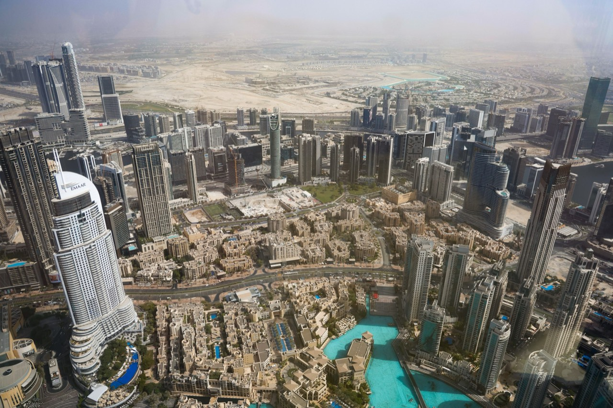

UAE · Dubai
Desert light and impossible skylines.
2024 summer
Photographs


The guide for this country is not written yet.
Back to destinationsDesert light and impossible skylines.
2024 summer

The guide for this country is not written yet.
Back to destinations